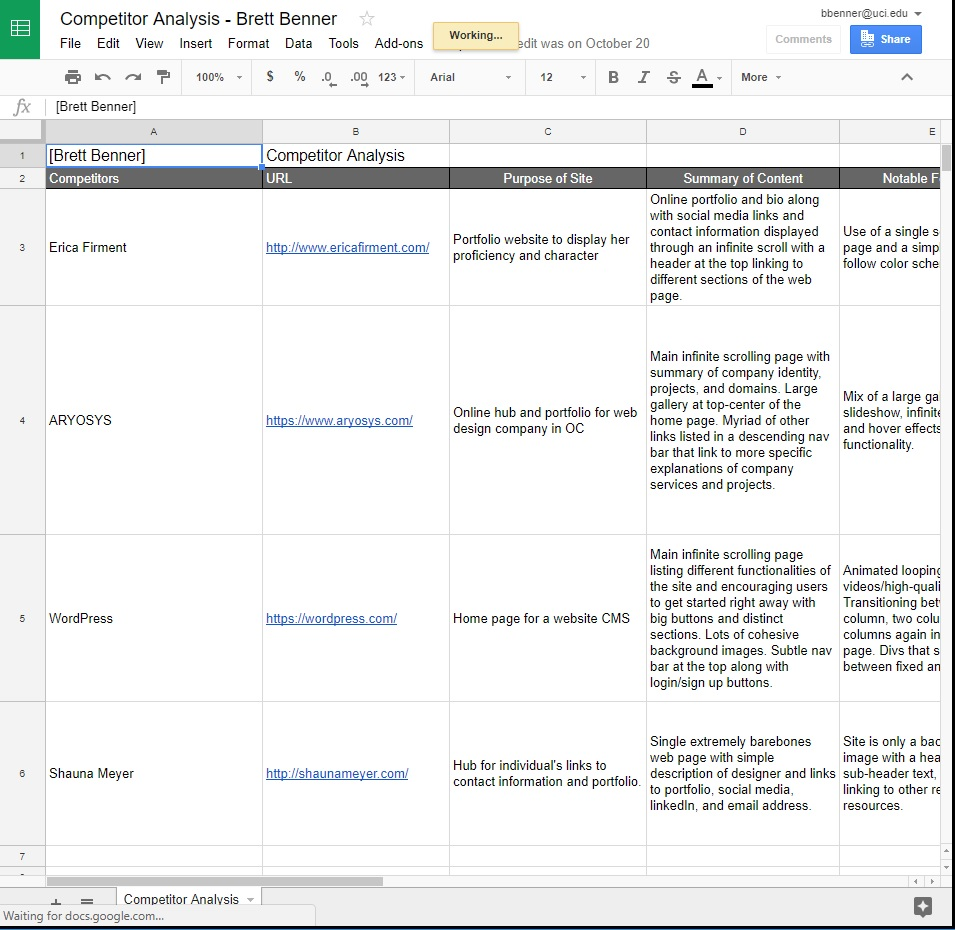
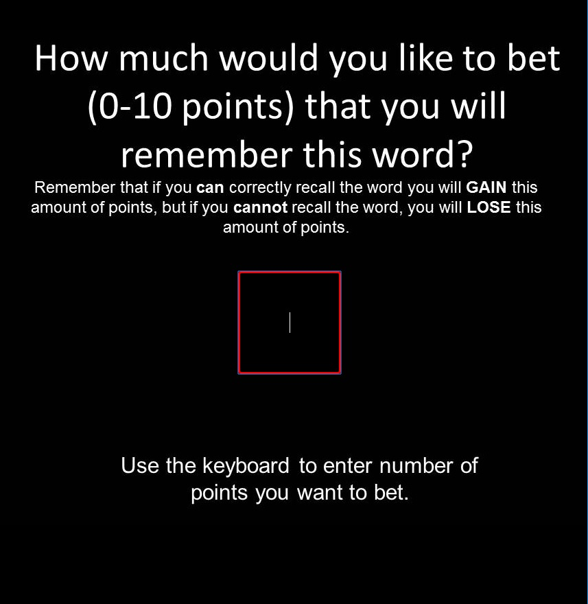
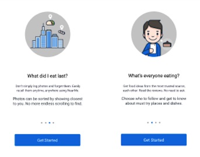
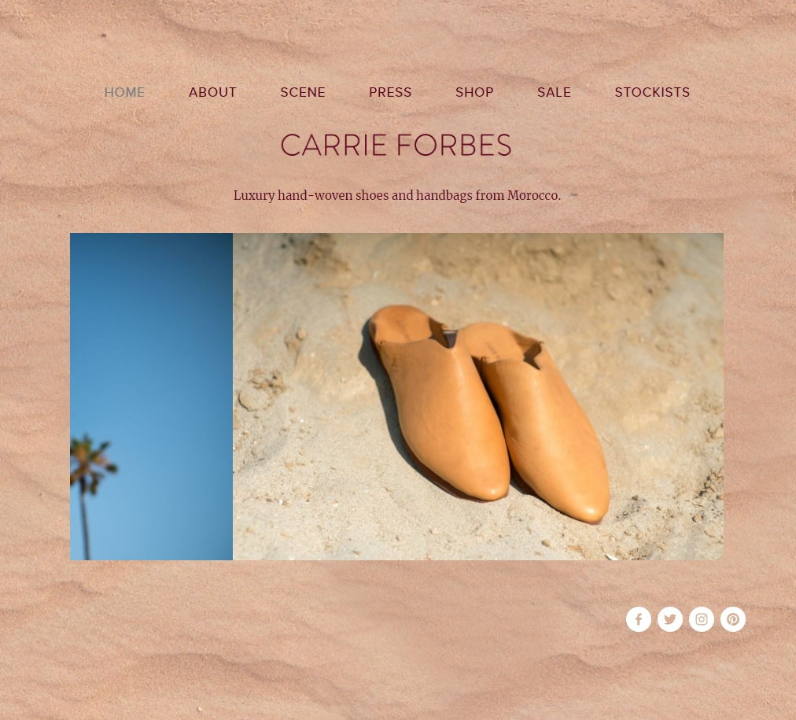

Hello! My name is
Brett Benner.
I am a part-time designer & and a full-time student.
About
You're probably wondering just who I am! I grew up in sunny San Diego and developed a love for alt-rock, carne asada, and salty breezes.
I am currently attending the University of California, Irvine as an undergraduate student studying Informatics with a specialisation in Human-Computer Interaction. I have been working recently on developing my technicals skills as a website developer, my creative skills as a designer, and my people skills as a user researcher.
My most current interests are operating as the publicity chair for the Japanese American club at UCI, planning a week long roadtrip for winter break, and waiting for some Murakami books to come off hold at the library!
Projects
| User Research and Testing | |
|---|---|
|
Light user researching and testing done for my portfolio website. User research consisted of user interviews with industry professionals, fellow ICS students at UCI, and professonals in other fields with resumes and portfolios. Competitor analysis was performed upon designers with online portfolios and web design companies with websites. The feature value matrix compiled features that I had devised as well as gathered during the previous research and provided quantifiable comparison. My feature prioritization outline was the final product of my user research and transition smoothly to actual portfolio development. |
 |
| UCI W.M.A.P Lab: MetaMemory Project | |
|
Year long project based around developing and hosting memory games used for research testing for the Working Memory and Plasticity Lab at UCI in the school of social ecology. Initial process was designing a basic html and css interface with javascript additions to allow players to play the game. Next phase was finding a hosting solution between WAMP and Amazon Web Servers. Final step was gathering player data and storing it in a database maintained through MySQL. |
 |
| Yummi: Onboarding Screens | |
|
Designed onboarding process and screens for the Yummi food logging app. Focus was on instilling a strong sense of product identity in users during their initial use of the app and distinguishing it from other socia media apps. Parallel research was done during the same time on different types of "foodies" and on the identity of the app. New feature walkthrough was later implemented to allow users to try out some of the core features during their first login. |
 |
| Tomo No Kai: Logo | |
|
Designed and produced the white paper crane logo used by the Japanese American club, Tomo No Kai, at UCI through Adobe Photoshop. Used in a variety of branding such as social media, websites, and general member apparel. |
|
| Tomo No Kai: Flyer | |
|
Designed and produced physical flyers for Tomo No Kai through Adobe Photoshop. Flyer used in 2017 boothing events including the UCI Anteater Involvement Fair and the Cross Cultural Center's Community Roots Festival. |

|
| Carrie Forbes: Website | |
|
Updated and transformed a static one page SquareSpace website into an online shop for the Carrie Forbes brand products. Made monthly design updates at the request of the owner as well as handling client error handling and customer service for orders. |  |